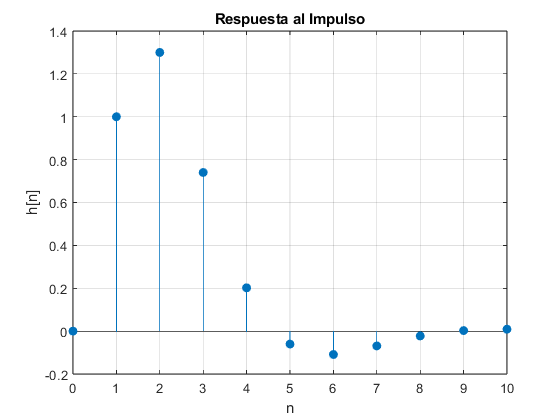
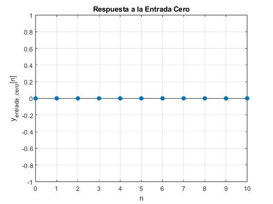
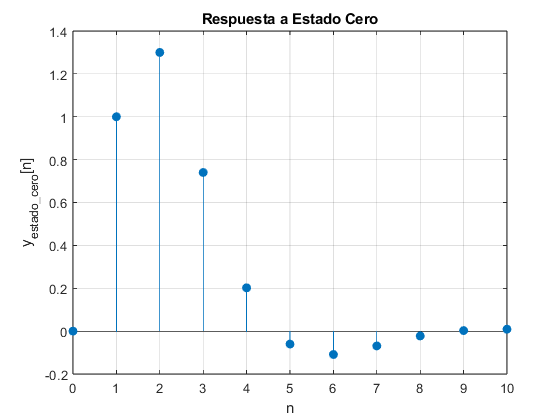
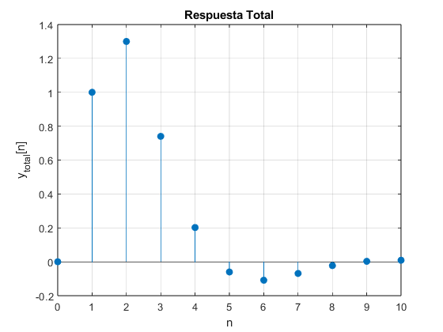
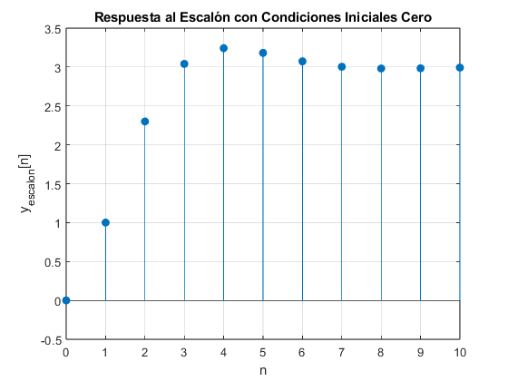

% SISTEMA EN DIFERENCIAS clc; clear; close all; % Definir la función de transferencia del sistema syms z n num = [1 0.5]; % Coeficientes del numerador den = [1 -0.8 0.3]; % Coeficientes del denominador
Crear la función de transferencia simbólica
Hz = poly2sym(num, z) / poly2sym(den, z);
disp('Función de transferencia del sistema H(z):');
pretty(Hz)
Función de transferencia del sistema H(z):
1
z + -
2
-------------
2 4 z 3
z - --- + --
5 10
Respuesta al impulso
h_impulse_sym = iztrans(Hz);
disp('Respuesta simbólica al impulso h[n]:');
pretty(h_impulse_sym)
Respuesta simbólica al impulso h[n]:
n 1 - n n - 1
5 kroneckerDelta(n, 0) (-1) 10 sqrt(14) (- 4 - #1) 25i
---------------------- + ------------------------------------------
3 56
n 1 - n n - 1
(-1) 10 sqrt(14) (- 4 + #1) 25i
- ------------------------------------------
56
n n / / / 2 sqrt(30) \ \ \
(-1) 3 cos| n | pi - acos| ---------- | | | 5
\ \ \ 15 / / /
+ -----------------------------------------------
n/2
2 30
where
#1 == sqrt(14) 1i
Graficar la respuesta al impulso
n_vals = 0:10; h_impulse_vals = double(subs(h_impulse_sym, n, n_vals)); figure; stem(n_vals, h_impulse_vals, 'filled'); title('Respuesta al Impulso'); xlabel('n'); ylabel('h[n]'); grid on;
Respuesta a entrada cero (u[n] = 0)
u_zero = zeros(1, length(n_vals)); % Entrada cero y_zero_sym = iztrans(Hz * 0); % Respuesta a entrada cero es cero disp('Respuesta simbólica a la entrada cero y_entrada_cero[n]:'); pretty(y_zero_sym)
Respuesta simbólica a la entrada cero y_entrada_cero[n]: 0
Graficar la respuesta a la entrada cero
figure; stem(n_vals, u_zero, 'filled'); title('Respuesta a la Entrada Cero'); xlabel('n'); ylabel('y_{entrada\_cero}[n]'); grid on;
Respuesta a estado cero (entrada diferente de cero, condiciones iniciales cero) Aquí asumimos una entrada diferente de cero como un impulso
x0 = 0; % Condiciones iniciales cero y_estado_cero_sym = iztrans(Hz); % Similar a la respuesta al impulso disp('Respuesta simbólica a estado cero y_estado_cero[n]:'); pretty(y_estado_cero_sym)
Respuesta simbólica a estado cero y_estado_cero[n]:
n 1 - n n - 1
5 kroneckerDelta(n, 0) (-1) 10 sqrt(14) (- 4 - #1) 25i
---------------------- + ------------------------------------------
3 56
n 1 - n n - 1
(-1) 10 sqrt(14) (- 4 + #1) 25i
- ------------------------------------------
56
n n / / / 2 sqrt(30) \ \ \
(-1) 3 cos| n | pi - acos| ---------- | | | 5
\ \ \ 15 / / /
+ -----------------------------------------------
n/2
2 30
where
#1 == sqrt(14) 1i
Graficar la respuesta a estado cero
figure; stem(n_vals, h_impulse_vals, 'filled'); title('Respuesta a Estado Cero'); xlabel('n'); ylabel('y_{estado\_cero}[n]'); grid on;
Respuesta total (considerando ambas entradas)
y_total_sym = y_zero_sym + y_estado_cero_sym;
disp('Respuesta simbólica total y_total[n]:');
pretty(y_total_sym)
Respuesta simbólica total y_total[n]:
n 1 - n n - 1
5 kroneckerDelta(n, 0) (-1) 10 sqrt(14) (- 4 - #1) 25i
---------------------- + ------------------------------------------
3 56
n 1 - n n - 1
(-1) 10 sqrt(14) (- 4 + #1) 25i
- ------------------------------------------
56
n n / / / 2 sqrt(30) \ \ \
(-1) 3 cos| n | pi - acos| ---------- | | | 5
\ \ \ 15 / / /
+ -----------------------------------------------
n/2
2 30
where
#1 == sqrt(14) 1i
Graficar la respuesta total
figure; stem(n_vals, h_impulse_vals, 'filled'); title('Respuesta Total'); xlabel('n'); ylabel('y_{total}[n]'); grid on;
Respuesta total al escalón con condiciones iniciales cero
u_step_sym = 1/(1 - z^-1); % Transformada Z de un escalón unitario y_step_sym = iztrans(Hz * u_step_sym); disp('Respuesta simbólica al escalón con condiciones iniciales cero y_escalon[n]:'); pretty(y_step_sym)
Respuesta simbólica al escalón con condiciones iniciales cero y_escalon[n]:
n 1 - n n - 1
(-1) 10 sqrt(14) (- 4 + #1) 3i
3 + -----------------------------------------
14
n n / / / 2 sqrt(30) \ \ \
(-1) 3 cos| n | pi - acos| ---------- | | | 5
\ \ \ 15 / / /
- -----------------------------------------------
n/2
30
n 1 - n n - 1
(-1) 10 sqrt(14) (- 4 - #1) 3i
- -----------------------------------------
14
where
#1 == sqrt(14) 1i
Graficar la respuesta total al escalón con condiciones iniciales cero
y_step_vals = double(subs(y_step_sym, n, n_vals)); figure; stem(n_vals, y_step_vals, 'filled'); title('Respuesta al Escalón con Condiciones Iniciales Cero'); xlabel('n'); ylabel('y_{escalon}[n]'); grid on;